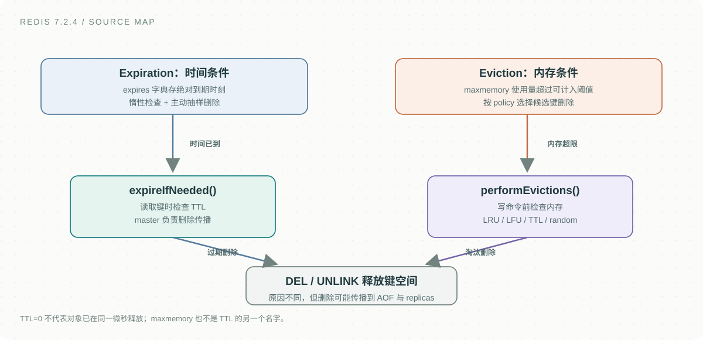
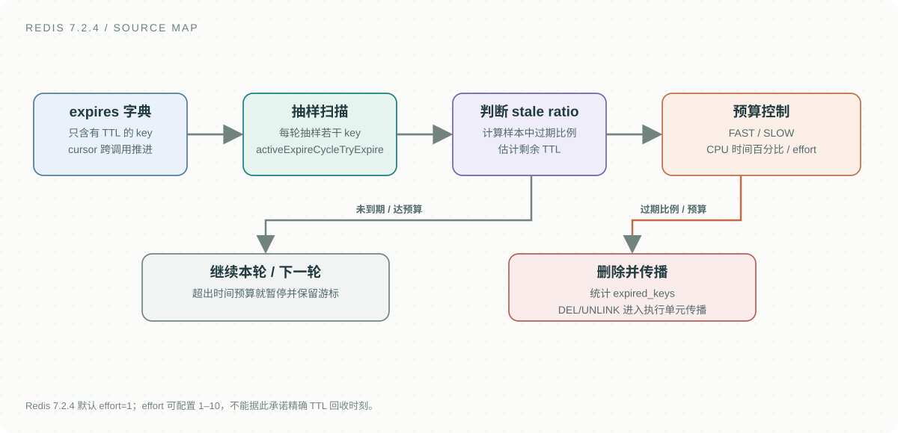
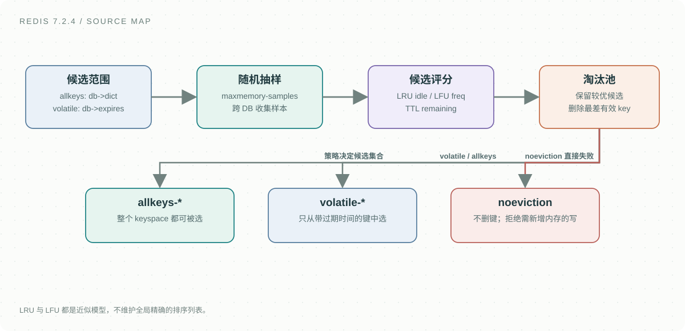

Chapter 19 / Redis 7.2.4 Source Anatomy
键过期与内存淘汰：TTL、主动清理和 maxmemory
从 db->expires、expireIfNeeded、activeExpireCycle 到 performEvictions 与 LRU/LFU 近似算法，解释过期删除和内存淘汰的边界。
键过期与内存淘汰：删除的触发条件不同
一个 key 可以因为 TTL 到期而失效，也可以在实例达到 maxmemory 时被淘汰。前者由键自身的绝对到期时刻决定；后者由内存使用量、淘汰策略和候选集合决定。一个没有 TTL 的 key 仍可能被 allkeys-lru 淘汰；一个有 TTL 的 key 也可能在 TTL 到达之前先被淘汰。

把两者混为一谈会导致错误的缓存诊断：expired_keys 统计过期删除，evicted_keys 统计内存淘汰。若业务数据意外消失，应同时检查这两组指标和对应配置，而不是只查看 TTL。
expires 字典：只为设置过期时间的键维护期限
每个 redisDb 有主 keyspace 字典 dict，以及独立的 expires 字典。setExpire() 将 key 的 SDS 引用放进 expires 字典，并把绝对到期时刻（毫秒）存为整数值。没有 TTL 的 key 不需要在 expires 字典中额外占一个条目。
getExpire() 返回绝对到期时间；keyIsExpired() 将它与当前毫秒时钟比较。TTL/PTTL 命令对外返回的是剩余时间，而内部 expires 字典存储的是到期时间点。这个区分也解释了 RDB 中 EXPIRETIME_MS 为什么保存绝对时间。
/* src/db.c 中的关键关系 */
setExpire(db, key, when_ms):
find key in db->dict
add same key SDS to db->expires
store when_ms
getExpire(db, key):
lookup db->expires
return absolute_expire_time_ms or -1key 的删除会同时移除主字典和 expires 字典对应项，避免过期元数据悬挂在已经不存在的 key 上。
惰性过期：读到键时检查，但副本不能擅自改写历史
惰性过期发生在 key 被访问时。lookupKey() 调用过期检查；若 key 已经过期，master 可以删除它并通过 deleteExpiredKeyAndPropagate() 传播删除操作。这样即使主动扫描尚未访问到该 key，客户端也不会继续读到逻辑上已经过期的数据。
副本上的规则更微妙：只读 replica 不能随意自行删除过期键，否则它的复制历史会与 master 不一致。Redis 7.2.4 的 expireIfNeeded() 在 replica 上通常把已过期 key 当作逻辑不存在返回；实际删除由 master 生成并传播的 DEL/UNLINK 来完成。对 writable replica 的写操作存在例外路径。
当 master 判定过期并删除时，Redis 将过期操作传播为 DEL 或 UNLINK，而不是要求每个 replica 用自己的时钟独立决定删除时刻。这使复制流中的删除顺序成为一致性的关键部分。
主动过期：分批抽样、估计 stale 比例并受预算约束
如果一个 key 很久没有被访问，惰性过期不会触发；Redis 还需要主动过期循环清理一部分到期 key。activeExpireCycle() 在 expires 字典中抽样，统计已抽样数量、实际过期数量和未过期 key 的 TTL 信息，并根据 stale 比例判断是否继续加大工作量。

Redis 7.2.4 有 fast 与 slow 两种循环。slow cycle 使用 CPU 时间百分比预算；fast cycle 有微秒级时间上限，并受到上次循环是否耗尽预算、stale 比例和最小间隔等条件约束。active-expire-effort 从 1 到 10 调整每轮 key 数量、时间预算和可接受 stale 比例；它不是“TTL 精度百分比”旋钮。
主动过期是渐进清理，不承诺 key 到期的同一毫秒就完成物理释放。若过期键比例较高，内存回收与事件循环预算之间需要折衷。
maxmemory 与候选策略：淘汰池不是全局排序树
getMaxmemoryState() 根据 allocator 使用量计算是否超过 maxmemory，并从可计入内存中扣除 AOF buffer 与复制缓冲的一部分，避免淘汰产生更多 DEL/复制数据、反过来触发更多淘汰的反馈循环。performEvictions() 在需要释放内存时，按 policy 选择候选 key 并删除，直到释放到目标量或耗尽候选/时间预算。

Redis 7.2.4 的策略包括 noeviction、allkeys-lru、allkeys-lfu、allkeys-random、volatile-lru、volatile-lfu、volatile-random 和 volatile-ttl。volatile-* 只在有 TTL 的 key 中选候选；如果没有可淘汰的 volatile key，行为接近 noeviction。
LRU 使用随机抽样与候选池近似全局最近最少使用；LFU 使用紧凑的概率计数器和衰减机制近似访问频率，而不是为每个 key 维护精确计数。volatile-ttl 选择剩余 TTL 较短的候选。随机策略则不依赖访问历史。
| 策略类别 | 候选范围 | 选择依据 |
|---|---|---|
| allkeys-lru / lfu / random | 所有 key | 最近使用、频率估计、随机 |
| volatile-lru / lfu / random | 仅设置 TTL 的 key | 同上，但候选被 TTL 限定 |
| volatile-ttl | 仅设置 TTL 的 key | 剩余 TTL 较短者优先 |
| noeviction | 不选择删除候选 | 内存不足时拒绝需要额外内存的写入 |
实验：分别触发 TTL 过期与 maxmemory 淘汰
先测试 TTL 路径：短 TTL key 在访问时被惰性过期。再在独立实例中设定 maxmemory 和 allkeys-lru，通过写入较大的 value 观察 evicted_keys。实验会修改实例配置，不能在生产环境直接执行。
# TTL 路径
./src/redis-cli -p 6390 SET ttl:demo short PX 120
./src/redis-cli -p 6390 PTTL ttl:demo
sleep 0.2
./src/redis-cli -p 6390 EXISTS ttl:demo
./src/redis-cli -p 6390 INFO stats | grep expired_keys
# 淘汰路径（建议另启一个独立实例）
./src/redis-server --bind 127.0.0.1 --port 6391 --save "" --appendonly no
./src/redis-cli -p 6391 CONFIG SET maxmemory 8mb
./src/redis-cli -p 6391 CONFIG SET maxmemory-policy allkeys-lru
redis-benchmark -p 6391 -t set -n 1500 -d 4096 -r 5000
./src/redis-cli -p 6391 INFO stats | grep evicted_keys
./src/redis-cli -p 6391 INFO memory | grep mem_not_counted_for_evict
./src/redis-cli -p 6391 SHUTDOWN NOSAVE若测试机上的 Redis 自身基线内存已接近 8MB，maxmemory 可能在测试开始前就已超限或无法释放到目标值。此时应先读 INFO memory 的基线，再设一个高于基线且足够小的测试上限；不要把某个固定字节阈值当成所有平台都适用。
线上排查：把 expired、evicted 和 memory buffer 分开看
INFO stats 中的 expired_keys 和 evicted_keys 是两种不同原因的删除计数。INFO memory 中的 mem_not_counted_for_evict 可帮助理解 AOF/复制缓冲对 maxmemory 计算的影响。命中率降低时，还要结合 keyspace_hits、keyspace_misses、当前 policy、TTL 分布和业务访问模式一起分析。
不要简单地将 maxmemory 设为机器物理内存的 100%。实例还需要为客户端输出缓冲、复制流、AOF buffer、fork COW、allocator 碎片和操作系统留出空间。尤其在 RDB/AOF rewrite 与大量写入同时发生时，进程 RSS 可能显著高于逻辑数据集大小。
本章的核心是分清“键因为时间失效”与“键因为资源压力被选中”。下一章进入复制：删除、写入和过期操作如何形成带 offset 的复制流，以及断线后怎样决定 PSYNC 还是全量同步。
固定版本源码与参考
实现细节以 Redis 7.2.4 为准；官方最新文档用于核对概念与运维语义，不能反向替代版本锁定的源码证据。